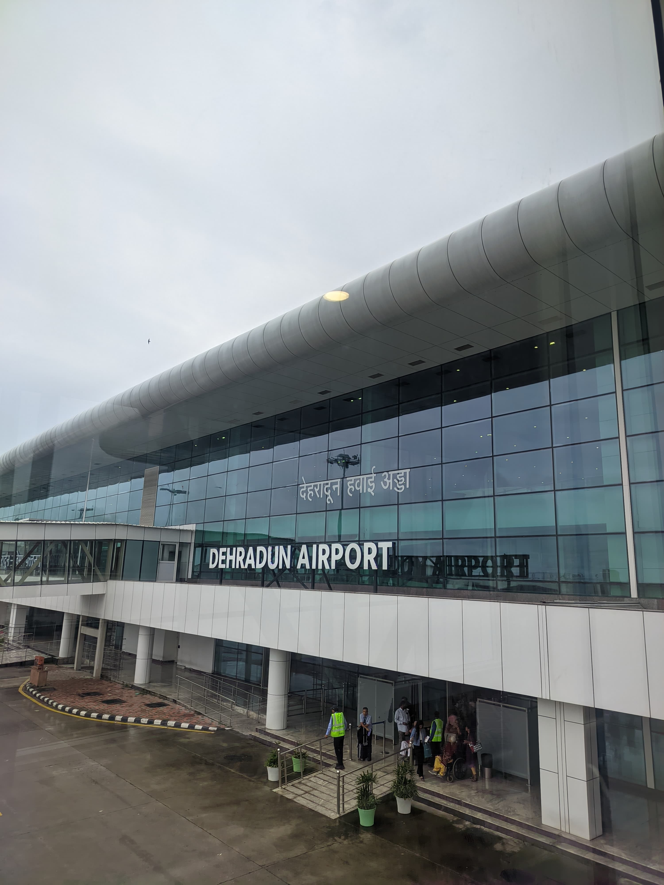
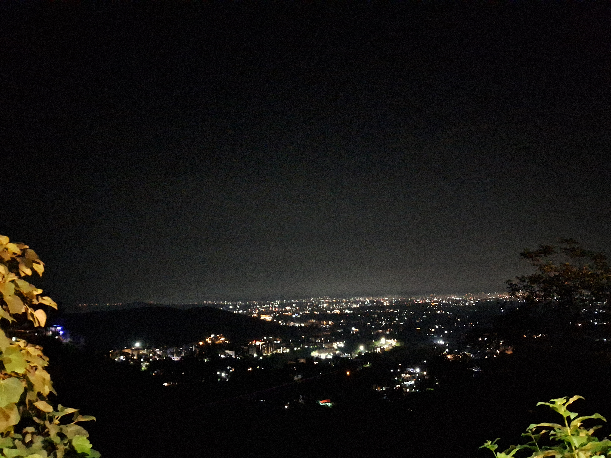
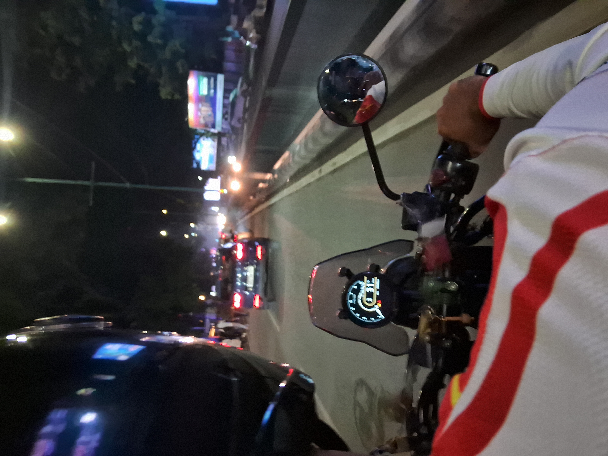
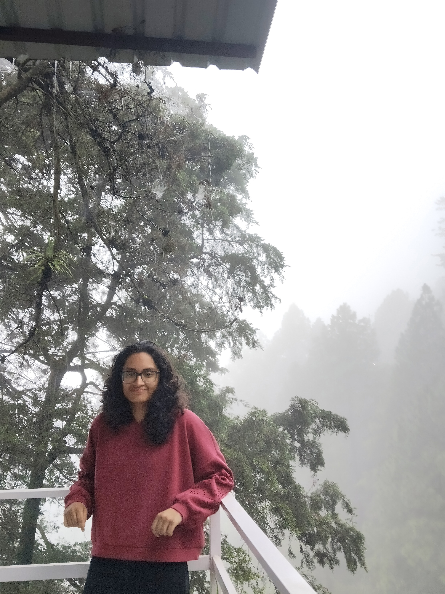
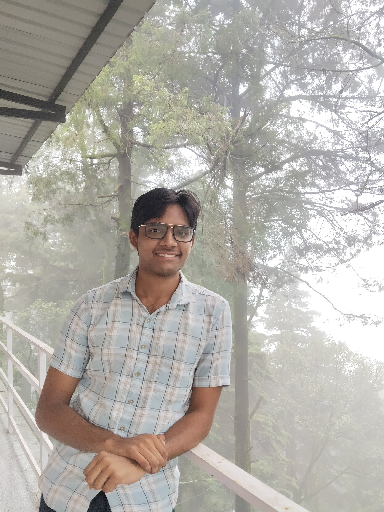
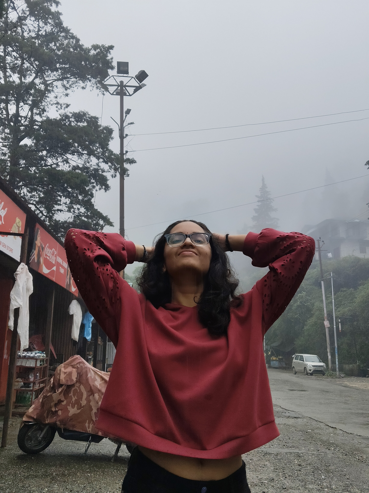
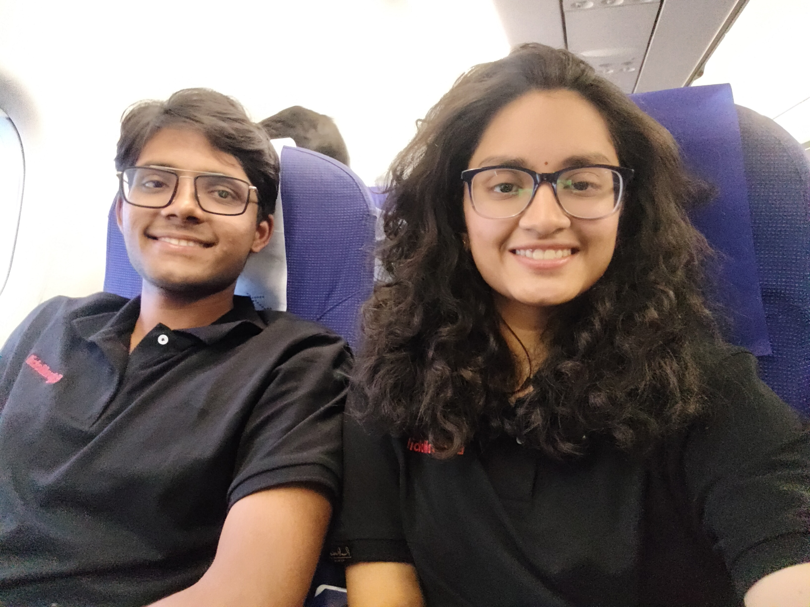

Fast Days at Ramada
It's a very short and fast training time. Being in the Ramada hotel, we don't get much interaction, and I really saw you stressing out over the exam.

I get to know Teja for the first time, and at the same time you seem to have other company too. You are so serious about the exam and I am not!!
We decided to study together, and you end up sleeping in my bed in a very cute and funny way, while I am just doing my 10k walk around the room.
The Exam and the Nerd
The exam and days went very fast, and I think we got our first salary too. You have been talking to Teja, others about the doubts and stressing about a lot.
That is how I totally understand how much of a nerd you are, in fact. It felt funny, but you are seriously a lot focused on the exam, and there is Deshpandey sitting next to me too.
I felt like I was the wrong person in the group for some time.
Separate Cabs, Separate Plans
We had separate cabs for transit and we barely talked to each other. You have your friends coming for the day, and I have asked Ramanan to go on a ride with Himalayan.
I fixated myself on going to Mussoorie, and we tried for some time. But I felt a little scared about night driving in the hills. We came back, and I wanted to take you there. I know that you made some plans already.


I know you would say no, but I wanted to ask you. In fact, I wanted you to see them so badly. I have convinced Ramanan that we can go on triple riding, and he agreed.



The Ride I Almost Gave Up On
I am almost at the verge of fixing myself that we are not going to speak much again after that. So I just felt like missing you, yet I don't want to express and complicate any of it.
That day I slept in the same room, and you told me that you miss me. I don't know… I felt very, very happy that you feel the same, and I am so happy that we are able to go for the ride.
A lot of thanks to you for keeping your plans aside for me and coming with me by trust. That's one of the great experiences which I will always remember.
The End Was Getting Closer
I am a bit sad and also a little worried about my relationship status. Till then I am just gaslighting myself that it's all till the end of the ITP, but now the end of the ITP has arrived, which creates tension in me.
In the cab, we had an intense discussion about Ajay and also Nikki. You kept asking like why I kinda hope that she gets a better person…
I am not able to answer that question at that moment, but the things I have realized are that I don't really fit in her world so much. I have always tried and went in with immaturity.
Yet, I am just a coward to take any action at that point of time.
The Last Day of ITP
The end of ITP has finally come, and we did web check.
Initially, me and you are supposed to do it together. But he has done it without asking me, so it left us some privacy to speak with each other, luckily.
I know I have a bit of a crush on you. I want to tell you that you are an attractive person, and for some reason I wished either you were a guy or I met you a lot earlier.
I wanted to be honest with you as you trust me so much, and I felt like it is the time to tell you.

Somewhere Above the Clouds
You got a little comfortable with me and you rested your head on my shoulders. I know it's frustrating in the airplane to stay subtle, especially when you have nausea.
I want to tell you that before we leave to our homes, I am a little scared and a little hesitant too. I gathered my courage and told you:
Your reaction definitely didn't help for sure. I got more scared looking at it. I am being calm on the outside just to make sure things don't go more south than that.
I have tried to explain to you, and you are listening. I am trying to make it sound diplomatic and at the same time trying to make you understand.
You are so tired, and we booked the cab together. I have no idea what you are thinking about me.
I just played it casually, hoping that you would take it the same way. I have no idea what you are up to and what exactly is happening at your end.
The Message
I have seen your message then. Partially I am happy and partially I am a bit anxious… I don't want to ruin our friendship.
I have been completely honest with you. Out of all the important parts of the thought, the most important is to keep you out of my relationship issues.
I don't want to drag you in, not even share with you until and unless I take a decision and I act about it.
What Comes After
The silence, the decisions, the courage are all I have to show further then.
They change the way the next page is written. ♡